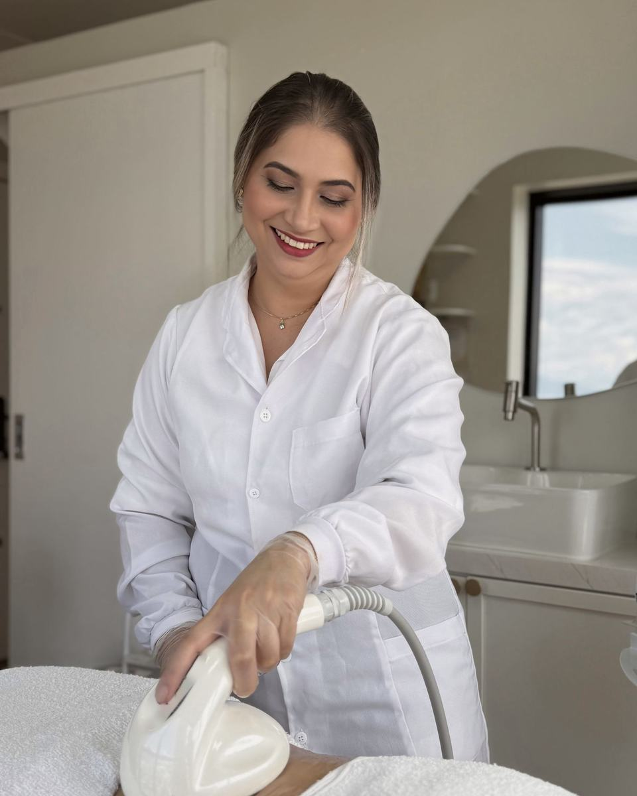
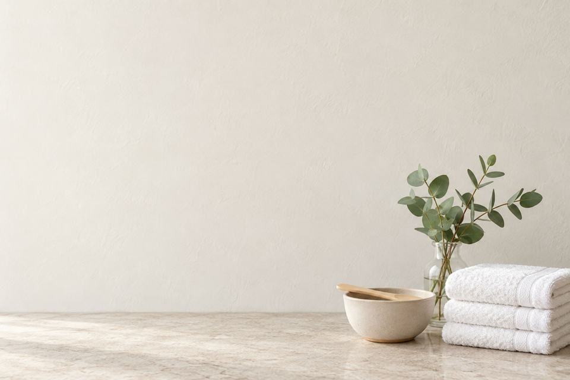
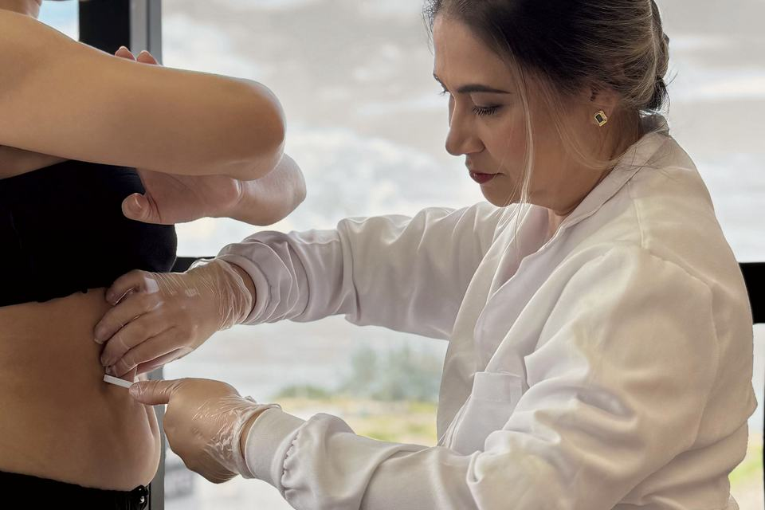
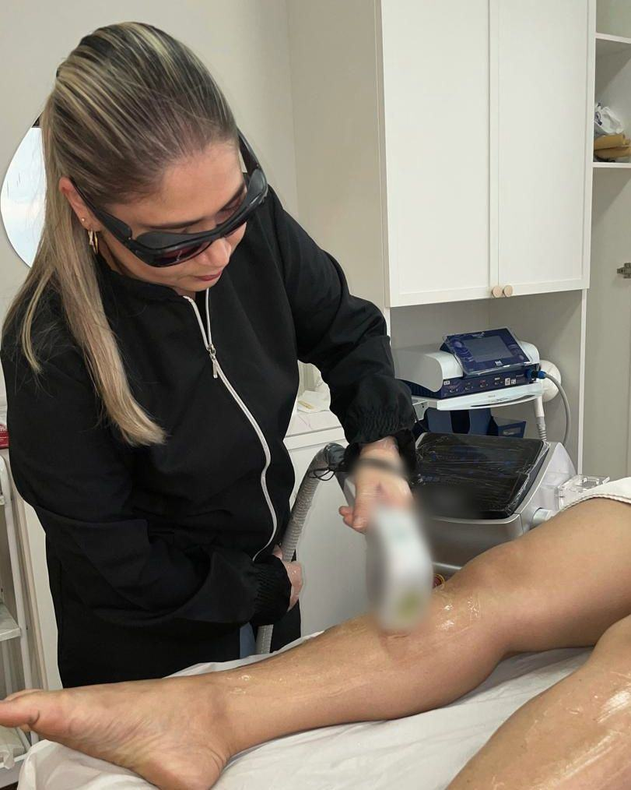

Estética em Campinas, São José
No tempo da sua pele.
Limpeza de pele, jato de plasma, depilação a LED e cuidados para o corpo, numa sala em Campinas.
Tatiana Guinzelli, esteticista e cosmetóloga

Como ela trabalha
Primeiro, a avaliação.
Cada procedimento é explicado antes, para você ter segurança na hora de decidir. Tudo acontece com calma e respeitando as suas limitações, para você ficar à vontade já no primeiro atendimento.
Ver como é o atendimento
Serviços
Escolha por onde começar.
O que a Tatiana faz na sala, do rosto ao corpo.
-
01
Rosto
Para começar pelo rosto e manter a pele bem cuidada.
- Limpeza de pele
- Revitalização facial
-
02
Corpo
Para o corpo, com massagem ou com aparelho.
- Gordura localizada
- Flacidez
- Massagens
- Depilação a LED
-
03
Íntima e capilar
Para a região íntima e para o couro cabeludo.
- Estética íntima
- Terapia capilar
Se ficou em dúvida, conte pelo WhatsApp o que você quer cuidar. Conversar pelo WhatsApp
Conheça a Tatiana
Tatiana Guinzelli, esteticista e cosmetóloga
Se eu não tivesse coragem de fazer em mim, eu jamais teria coragem de indicar para uma paciente.
Por isso mostro no Instagram o processo real, inclusive a minha própria recuperação, sem filtros. Cuido da beleza na minha clínica, em Campinas, São José.
Quem cuida também merece ser cuidada.

Tecnologias
Três aparelhos da sala.
O que é cada um e em que regiões a Tatiana usa.
-
01
Jato de plasma
Uma ponteira fina trabalha a superfície da pele em pontos pequenos. A Tatiana usa na região dos olhos, nas mãos e no abdômen.
-
02
Depilação a LED
Depilação feita com luz fria, com resfriamento na ponteira.
-
03
Ultrassom microfocado
Ondas de ultrassom concentradas abaixo da superfície da pele. A Tatiana usa no olhar, no contorno do rosto, abaixo do queixo e no pescoço.
Passo a passo
Como é o atendimento
Do primeiro contato ao pós, em quatro passos.
-
Marcar a avaliação
Pelo WhatsApp ou pelo Direct do Instagram. Se quiser, já adiante o que está incomodando.
-
Avaliação na sala
A Tatiana olha a sua pele e indica o protocolo ideal para você.
-
O procedimento
Você começa sabendo exatamente o que esperar, e a Tatiana cuida para você ficar confortável.
-
Depois da sessão
Você tem suporte no pós.
Agende sua avaliação.
Onde fica
Uma sala no Di Bernardi Tower.
Rua Wanderlei Júnior, 05, sala 1001Ed. Di Bernardi Tower
Campinas · São José–SC, 88101-010
- Segunda a sexta, das 9h às 19h
- Estacionamento com acessibilidade para cadeira de rodas
Dúvidas
Antes de agendar
Quantas sessões vou precisar?
Depende do procedimento e do tempo da sua pele. Por isso o número de sessões só é indicado depois da avaliação.
Vou precisar de recuperação?
Depende do procedimento. Alguns pedem cuidados nos dias seguintes, e você pode perguntar quais antes de agendar.
A depilação a LED serve para pele morena ou negra?
A Tatiana indica a depilação a LED também para peles morenas e negras. Para o seu tom de pele, a confirmação sai da avaliação.
Quanto custa?
O valor depende do procedimento e é combinado no primeiro contato, pelo WhatsApp.
Atende aos sábados?
O horário publicado é de segunda a sexta, das 9h às 19h. Para outro dia, pergunte pelo WhatsApp.
Vou ser bem recebida?
Sim. O espaço é uma empresa que acolhe a comunidade LGBTQ+.

Para começar
Se for para falar de pele, pode deixar comigo.
Será um prazer analisar o seu caso.